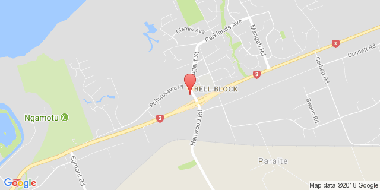
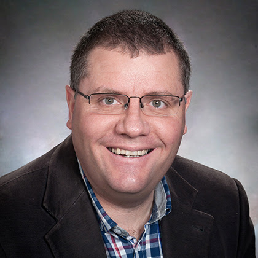

Speaker

Dr. Michael Flinn became a minister in 1988 and has been used by God to plant churches in Pukekohe and Christchurch. He most recently served as a minister at the Reformed Church of Palmerston North, and has also enjoyed working as a tutor and lecturer at the Reformed Theological College in Geelong, Australia.
His greatest passion is knowing and loving his God. He is particularly passionate about how the Word of God gives us wisdom and help in times of trouble. Regardless of what life brings, Dr Flinn is convinced that Scripture teaches that God is working all things for the good of those that love him (Rom 8:28).
Michael is excited to speak to us about “Hope”. This is a powerful and appropriate topic for us as a society, especially in the past couple of years. Although international statistics that say suicide rates are dropping, studies this past year indicate rising rates of suicide even among high-school students. Is there a solution to such a devastating problem? Dr Flinn will show us that hope is not empty—but when directed at a champion who is trustworthy, good, and powerful to save, we can find freedom and peace for our souls.
Talks

Talk 1: Hope - The What and the Why: We live in a society that is well acquainted with hopelessness—but less familiar with hope. Part of the dilemma we’ve faced is that we have placed our hope in all the wrong heroes. Why is hope in God different?
Talk 2: Does God Care? A common question about Christianity is: “How can God be loving if so much bad happens in the world?” Does the Bible have a clear answer? Why are our lives in a mess? Is God involved here or not? Does he care?
Talk 3: The Solution - Christ in His Sufferings: The hope we have as Christians is not simply a matter of looking to our future inheritance that we receive in Christ when we die. Hope has a crucial part to play in how we view our earthly struggle. This side of heaven we are called to share in the sufferings of Christ for his glory. This is neither empty nor futile
Talk 4: Walking in His Footsteps: As Christians who have hope, what part does God want us to have in our society? Does he give us a role beyond evangelism? What does this look like?
Schedule
The conference schedule for the day is below.
Location

Pacific International Hotel Management School
4 Henwood Road
Bell Block
New Plymouth
New Zealand
More Information
See up to date news and information relating to the conference on Facebook
For information on previous years conferences click on the links below:
2019 : Transforming Truth

Dr Phillip Scheepers is the vice-principal of the Reformed Theological Seminary in Geelong, Australia where he lectures on Missions and Church History. After his training in the ministry in South Africa, he worked in mission work locally before moving to London. He was there for 8 years working for Veritas College, where he established training ministries for local church leaders in the Arab world.
In 2007 he moved to Australia in order to secure support for the Veritas training program and joined the Reformed Theological College in 2010.
Phillip spoke to us about “Truth” as we consider the place of Christianity in our modern society, and how this impacts on who we are in relation to God, ourselves and others. Without a real grounding in Biblical truth we are simply cast adrift and tossed in all directions, which is something we see all around us today! The truth about God and our Lord is directly relevant to every aspect of our lives.
Talks
Truth as God’s Truth: An overview of Biblical teaching on truth and why we can trust God’s Word as true.
Session 1 Slides
Truth and the Self: How does God’s truth impact how we view ourselves, i.e. a ‘biblical anthropology’, how does this differ from society’s views of personhood. Why the Biblical view makes sense and some areas of practical application.
Session 2 Slides
Truth and Relationships: What does the Bible say about how we interact with one another? How the pursuit of your potential leads to ‘a war of all against all’ and how Biblical truth can be a powerful corrective to this - i.e. love and serve one another
Session 3 Slides
Truth and Society: Answering the ‘so what’ question. How does believing in Biblical truth impact the way in which we view and seek to transform our society. How can we do this?
Session 4 Slides
2018 Conference: Worship
After an early career as a university lecturer in Soil Science, Andrew Young was called into pastoral ministry in 1981. In 1995 he was asked to serve as founding Principal of Grace Theological College in Auckland and continued serving in this position for 13 years. Since 2012 to the present Andrew is a director of the Ezra Ministry, a writing, research and teaching ministry committed to promoting the spiritual development of leaders. His passion is to help Christians know and experience God more deeply in their personal lives and ministries.
Talks
Where Worship Fits: What place does worship play in the life of a Christian? What is worship? These are critical questions to ask and answer today. (1 Peter 2:4-5)
Session 1 Video Session 1 Slides
The God we Worship: Worship is a response to God’s self-revelation. But what is God like? Our perception of God has an enormous influence on how we live and worship. (Exodus 20:3-6; 1 Thessalonians 1:9-10)
Session 2 Video Session 2 Slides
The Difference Jesus Makes: Jesus himself is the truest worshipper that has ever lived. What influence does his life and work make on the way we worship God? (Mark 1:35-39; Hebrews 10:19-22)
Session 3 Video Session 3 Slides
Private, Family and Corporate Worship: How does our understanding of worship influence these three traditionally accepted forms of worship? Are they still valid and important for us today? (Deuteronomy 6:4-9; Matthew 6:5-6; Psalm 22:22-24)
Session 4 Video Session 4 Slides